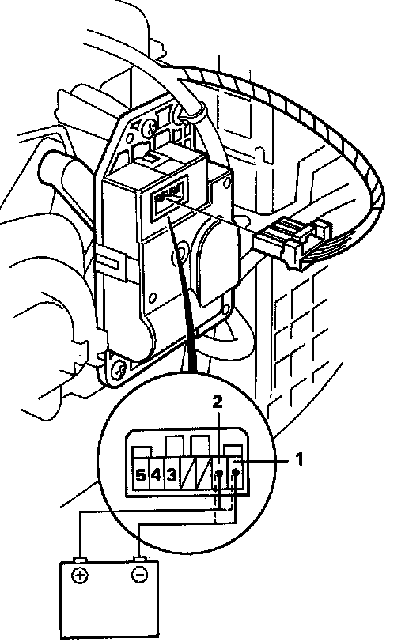

Air Mix Control Motor
Air Mix Control Motor Test
1. Measure the resistance between the No.3 and 5 terminals.
Resistance: approx. 10 kOhm
2. Check the air mix control motor operation by briefly connection the battery (12 V) positive to the No.2 terminal and negative to the No.1 terminal.
NOTE: If the air mix control motor does not run, remove it, and check the air mix control motor links for smooth operation. If the air mix control motor links operate normally, replace the air mix control motor.
3. Reverse the wires to be sure the air mix control motor will run in both directions.
CAUTION: Be sure to disconnect the battery from the air mix control motor as soon as the air mix control motor has started. Failure to do so will damage air mix control motor.
4. Connect a battery (12 V) to the air mix control motor (positive to No.2 and negative to No.1), and measure the resistance between the terminals No. 4 and No.5.
Resistance should be approximately approx. 8.7 kOhm at COOL and approx. 1.0 KOhm at HOT.
Also check the resistances with the battery polarity reversed.